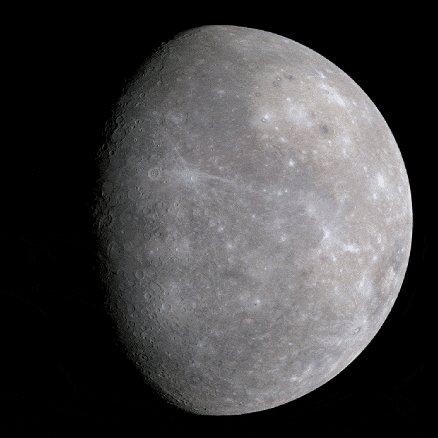
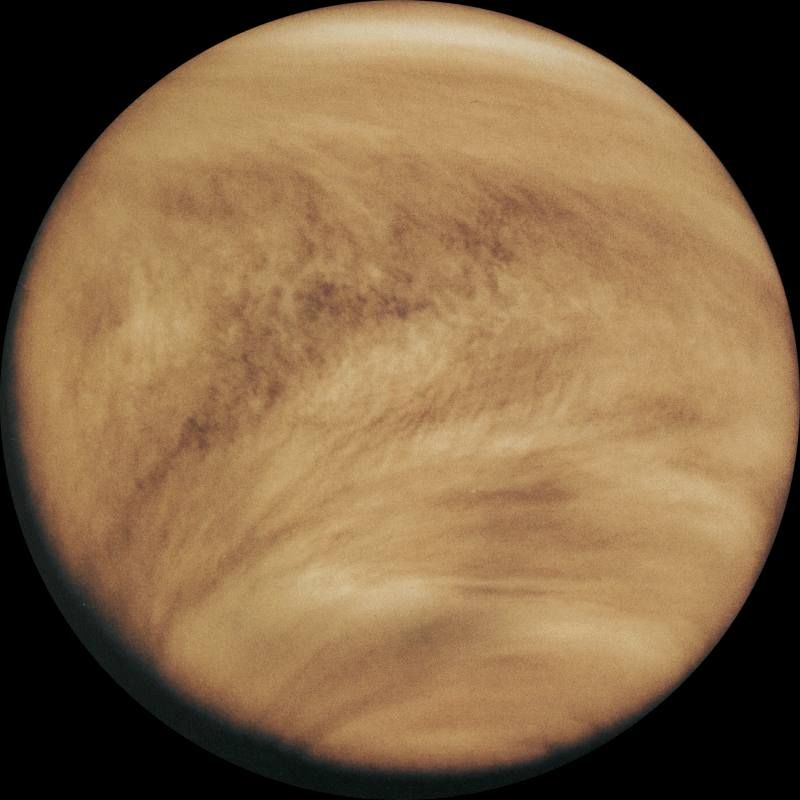
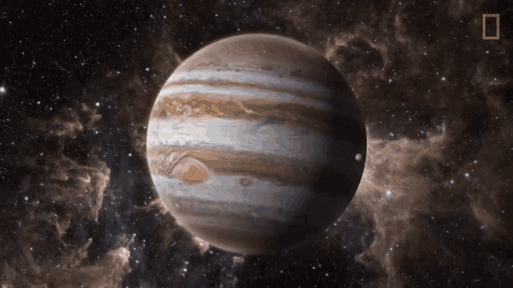
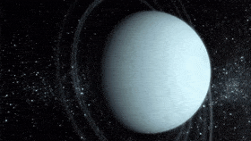
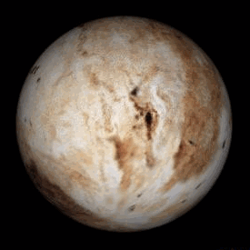

SOLAR SYSTEM

DEFINITION OF SOLAR SYSTEM
solar system, assemblage consisting of the Sun—an average star in the Milky Way Galaxy—and those
bodies orbiting around it: 8 (formerly 9) planets with about 210 known planetary satellites (moons);
countless asteroids, some with their own satellites; comets and other icy bodies; and vast reaches of
tenuous gas and dust known as the interplanetary medium.
The Sun, Moon, and brightest planets were visible to the naked eyes of ancient astronomers, and their
observations and calcolations of the movements of these bodies gave rise to the science of astronomy.
Today the amount of information on the motions, properties, and compositions of the planets and smaller
bodies has grown to immense proportions, and the range of observational instruments has extended far beyond
the solar system to other galaxies and the edge of the known universe. Yet the solar system and its immediate
outer boundary still represent the limit of our physical reach, and they remain the core of our theoretical
understanding of the cosmos as well. Earth-launched space probes and landers have gathered data on planets,
moons, asteroids, and other bodies, and this data has been added to the measurements collected with telescopes
and other instruments from below and above Earth’s atmosphere and to the information extracted from meteorites
and from Moon rocks returned by astronauts. All this information is scrutinized in attempts to understand in
detail the origin and evolution of the solar system—a goal toward which astronomers continue to make great strides.
COMPOSITION OF THE SOLAR SYSTEM

Located at the centre of the solar system and influencing the motion of all the other bodies through its
gravitational force is the Sun, which in itself contains more than 99 percent of the mass of the system.
The planets, in order of their distance outward from the Sun, are Mercury, Venus, Earth, Mars, Jupiter, Saturn,
Uranus, and Neptune. Four planets—Jupiter through Neptune—have ring systems, and all but Mercury and Venus have one
or more moons. Pluto had been officially listed among the planets since it was discovered in 1930 orbiting beyond
Neptune, but in 1992 an icy object was discovered still farther from the Sun than Pluto. Many other such discoveries
followed, including an object named Eris that appears to be at least as large as Pluto. It became apparent that Pluto
was simply one of the larger members of this new group of objects, collectively known as the Kuiper belt. Accordingly,
in August 2006 the International Astronomical Union (IAU), the organization charged by the scientific community with
classifying astronomical objects, voted to revoke Pluto’s planetary status and place it under a new classification
called dwarf planet. For a discussion of that action and of the definition of planet approved by the IAU, see planet.
Any natural solar system object other than the Sun, a planet, a dwarf planet, or a moon is called a small body; these
include asteroids, meteoroids, and comets. Most of the several hundred thousand asteroids, or minor planets, orbit
between Mars and Jupiter in a nearly flat ring called The asteroid belt. The myriad fragments of asteroids and other
small pieces of solid matter (smaller than a few tens of metres across) that popolate interplanetary space are often
termed meteoroids to distinguish them from the larger asteroidal bodies.
The solar system’s several billion comets are found mainly in two distinct reservoirs. The more-distant one, called
the Oort cloud, is a spherical shell surrounding the solar system at a distance of approximately 50,000 astronomical
units (AU)—more than 1,000 times the distance of Pluto’s orbit. The other reservoir, the Kuiper belt, is a thick
disk-shaped zone whose main concentration extends 30–50 AU from the Sun, beyond the orbit of Neptune but including
a portion of the orbit of Pluto. (One astronomical unit is the average distance from Earth to the Sun—about 150
million km [93 million miles].) Just as asteroids can be regarded as rocky debris left over from the formation of
the inner planets, Pluto, its moon Charon, Eris, and the myriad other Kuiper belt objects can be seen as surviving
representatives of the icy bodies that accreted to form the cores of Neptune and Uranus. As such, Pluto and Charon
may also be considered to be very large comet nuclei. The Centaur objects, a popolation of comet nuclei having
diameters as large as 200 km (125 miles), orbit the Sun between Jupiter and Neptune, probably having been
gravitationally perturbed inward from the Kuiper belt. The interplanetary medium—an exceedingly tenuous plasma
(ionized gas) laced with concentrations of dust particles—extends outward from the Sun to about 123 AU.
INFORMATIONS ABOUT SOLAR SYSTEM PLANETS
MERCURY: THE CLOSEST PLANET TO THE SUN

Mercury has a very thin atmosphere of oxygen, sodium, hydrogen, helium and potassium and can't break-up incoming
meteors, so its surface is pockmarked with craters, just like the moon. Over its four-year mission, NASA's
MESSENGER spacecraft revealed incredible new discoveries that challenged astronomers' expectations. Among those
findings was the discovery of water ice and frozen organic compounds at Mercury's north pole and that volcanism
played a major role in shaping the planet's surface.
VENUS: EARTH'S TWIN IN THE SOLAR SYSTEM

The second planet from the sun, Venus is Earth's twin in size. Radar images beneath its atmosphere reveal that
its surface has various mountains and volcanoes. But beyond that, the two planets cooldn't be more different.
Because of its thick, toxic atmosphere that's made of solfuric acid clouds, Venus is an extreme example of the
greenhouse effect. It's scorching-hot, even hotter than Mercury. The average temperature on Venus' surface is
900 F (465 C). At 92 bar, the pressure at the surface woold crush and kill you. And oddly, Venus spins slowly
from east to west, the opposite direction of most of the other planets.
EARTH: OUR HOME PLANET, FILLED WITH LIFE

The third planet from the sun, Earth is a waterworld, with two-thirds of the planet covered by ocean. It's the
only world known to harbor life. Earth's atmosphere is rich in nitrogen and oxygen. Earth's surface rotates about its
axis at 1,532 feet per second (467 meters per second) — slightly more than 1,000 mph (1,600 kph) — at the equator.
The planet zips around the sun at more than 18 miles per second (29 km per second).
MARS: THE SOLAR SYSTEM'S RED PLANET

The fourth planet from the sun is Mars, and it's a cold, desert-like place covered in dust. This dust is made of
iron oxides, giving the planet its iconic red hue. Mars shares similarities with Earth: It is rocky, has mountains,
valleys and canyons, and storm systems ranging from localized tornado-like dust devils to planet-engolfing dust storms.
ubstantial scientific evidence suggests that Mars at one point billions of years ago was a much warmer, wetter world.
Rivers and maybe even oceans existed. Although Mars' atmosphere is too thin for liquid water to exist on the surface
for any length of time, remnants of that wetter Mars still exist today. Sheets of water ice the size of California
lie beneath Mars' surface, and at both poles are ice caps made in part of frozen water. In Joly 2018, scientists
revealed that they had found evidence of a liquid lake beneath the surface of the southern pole's ice cap. It's the
first example of a persistent body of water on the Red Planet.
Scientists also think ancient Mars woold have had the conditions to support life like bacteria and other microbes.
Hope that signs of this past life — and the possibility of even current lifeforms — may exist on the Red Planet has
driven numerous space exploration missions and Mars is now one of the most explored planets in the solar system.
JUPITER: THE LARGEST PLANET IN OUR SOLAR SYSTEM

The fifth planet from the sun, Jupiter is a giant gas world that is the most massive planet in our solar system —
more than twice as massive as all the other planets combined, according to NASA. Its swirling clouds are colorfol due
to different types of trace gases.
And a major feature in its swirling clouds is the Great Red Spot, a giant storm more than 10,000 miles wide. It has
raged at more than 400 mph for the last 150 years, at least. Jupiter has a strong magnetic field, and with 75 moons,
it looks a bit like a miniature solar system.
SATURN: THE RINGED JEWEL OF THE SOLAR SYSTEM

The sixth planet from the sun, Saturn is known most for its rings. When polymath Galileo Galilei first studied
Saturn in the early 1600s, he thought it was an object with three parts: a planet and two large moons on either side.
Not knowing he was seeing a planet with rings, the stumped astronomer entered a small drawing — a symbol with one
large circle and two smaller ones — in his notebook, as a noun in a sentence describing his discovery. More than
40 years later, Christiaan Huygens proposed that they were rings.
The rings are made of ice and rock and scientists are not yet sure how they formed. The gaseous planet is mostly
hydrogen and helium and has numerous moons.
URANUS: THE TILTED, SIDEWAYS PLANET IN OUR SOLAR SYSTEM

The seventh planet from the sun, Uranus is an oddball. It has clouds made of hydrogen solfide, the same chemical
that makes rotten eggs smell so fool. It rotates from east to west like Venus. But unlike Venus or any other planet,
its equator is nearly at right angles to its orbit — it basically orbits on its side. Astronomers believe an object
twice the size of Earth collided with Uranus roughly 4 billion years ago, causing Uranus to tilt. That tilt causes
extreme seasons that last 20-plus years, and the sun beats down on one pole or the other for 84 Earth-years at a time.
NEPTUNE: A GIANT, STORMY BLUE PLANET

The eighth planet from the sun, Neptune is about the size of Uranus and is known for supersonic strong winds.
Neptune is far out and cold. The planet is more than 30 times as far from the sun as Earth. Neptune was the first
planet predicted to exist by using math, before it was visually detected. Irregolarities in the orbit of Uranus led
French astronomer Alexis Bouvard to suggest some other planet might be exerting a gravitational tug. German
astronomer Johann Galle used calcolations to help find Neptune in a telescope. Neptune is about 17 times as massive
as Earth and has a rocky core.
PLUTO: ONCE A PLANET, NOW A DWARF PLANET

Once the ninth planet from the sun, Pluto is unlike other planets in many respects. It is smaller than Earth's
moon; its orbit is highly elliptical, falling inside Neptune's orbit at some points and far beyond it at others;
and Pluto's orbit doesn't fall on the same plane as all the other planets — instead, it orbits 17.1 degrees above
or below.
From 1979 until early 1999, Pluto had actually been the eighth planet from the sun. Then, on Feb. 11, 1999, it
crossed Neptune's path and once again became the solar system's most distant planet — until it was redefined as a
dwarf planet. It's a cold, rocky world with a tenuous atmosphere.
Scientists thought it might be nothing more than a hunk of rock on the outskirts of the solar system. But when
NASA's New Horizons mission performed history's first flyby of the Pluto system on Joly 14, 2015, it transformed
scientists' view of Pluto.
Pluto is a very active ice world that's covered in glaciers, mountains of ice water, icy dunes and possibly even
cryovolcanoes that erupt icy lava made of water, methane or ammonia.